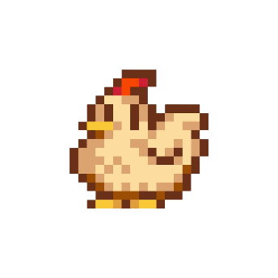

A Agro Forte traz a nostalgia do Vale de Stardew para a agricultura do futuro. Tecnologia de ponta com a alma sustentável do campo.
Explorar TechMapeamento de safras via GPS. Veja sua fazenda como se fosse um minimapa de jogo.
Sistema inteligente que rega apenas quando a planta precisa.
Sementes de alto rendimento cultivadas de forma sustentável.
Inspired by Stardew Valley, acreditamos que a agricultura pode ser tão divertida quanto um jogo de pixel.
Nível do Jogador: Lendário 🌟
